Acute kidney injury, part 2 of 2: what to do. The debrief for week 7, Not himself
Part 2 of 2 · Thursday, 15:05
Stage 3 kidney injury, and a chart that looks nearly quiet. What do you do?
← Back to Part 1: what it is, its causes and the tests

- Stanley Garside, 84, was sent in from his nursing home, newly confused. This morning he hit a carer.
- His observations were nearly normal: NEWS2 (the National Early Warning Score) 4.
- Creatinine 286 micromol/L against 88 three months ago: 3.25 times his usual, which is stage 3 acute kidney injury (AKI). Potassium 5.8.
- Part 1 covered what AKI is, its causes and the tests. This part is what to do.
His confusion has its own page. Delirium: the debrief
What to do · the Harrogate bundle
ROUND UP: seven letters.
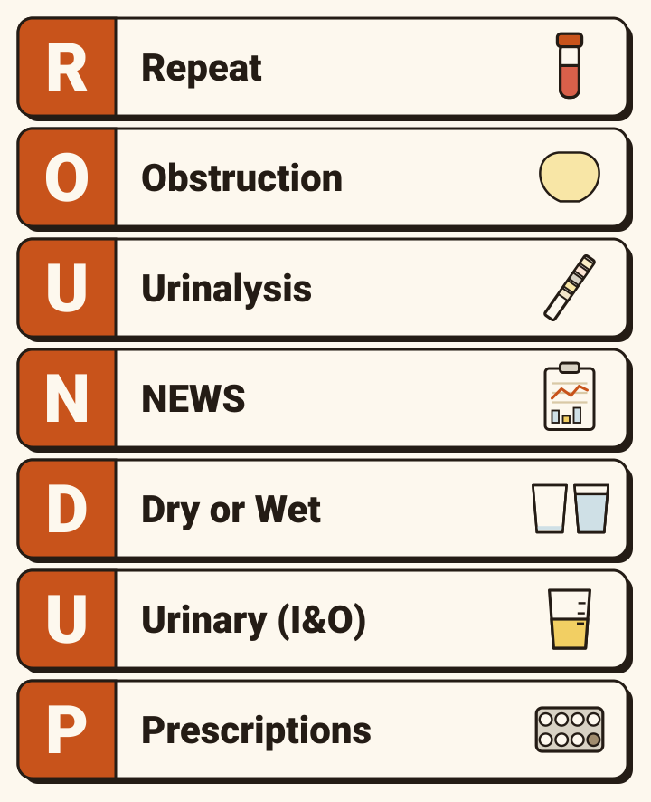
- ROUND UP is the AKI care bundle of Harrogate and District NHS Foundation Trust, version 3, May 2025.
- RRepeat
- OObstruction
- UUrinalysis
- NNEWS
- DDry or Wet
- UUrinary (I&O)
- PPrescriptions
- It is for the first diagnosis and management of AKI in adult inpatients.
- It is written to follow NICE’s guideline, NG148.
- The letters are a memory aid. Nothing in the bundle says to do them in order.
- It is what Stanley’s plan was marked against.
R · Repeat
Set it against the last one, then check it every day.
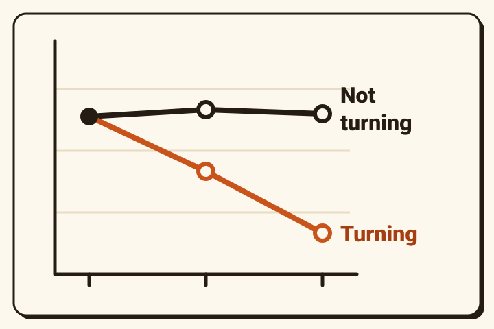
- “Daily U&Es including potassium, calcium, bicarbonate, phosphate, FBC & pH.”
- “High risk hyperkalaemia associated with AKI”. The bundle says to treat it by the trust’s hyperkalaemia protocol.
- “monitor fluid overload.”
- “ABCDE Assessment if patient deteriorates”.
- In plain words: kidney blood tests every day, with a full blood count and a blood gas.
- NICE: daily creatinine is typical in hospital.
- UK Kidney Association: at least daily until the kidney function is back to baseline or has settled.
O · Obstruction
Look for a full bladder. A soft abdomen did not rule one out in Stanley.
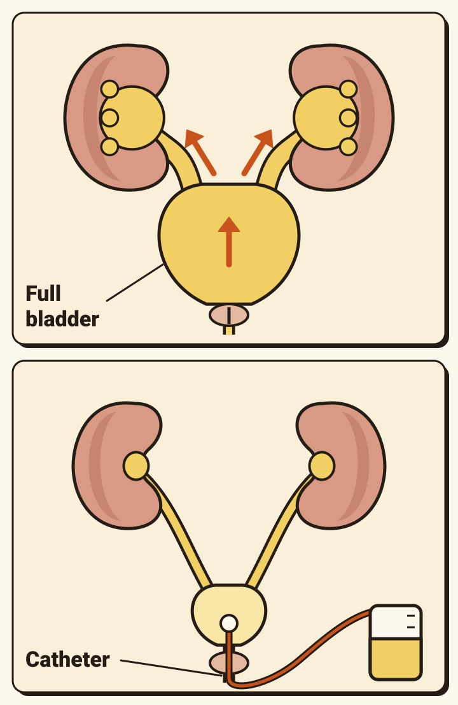
- “Examine bladder, consider bladder scan.”
- “Catheterise if palpable bladder, urinary retention, or oliguria.” Oliguria means passing very little urine.
- “If obstruction on USS, refer to Urology.”
- No cause found, or a blockage possible: an urgent ultrasound of the urinary tract within 24 hours.
- Within 6 hours if an infected, blocked kidney (pyonephrosis) is suspected.
- NICE: no routine ultrasound when the cause has already been found.
- NICE: at once if the blocked kidney is infected, is the only kidney, or both sides are blocked, or the blockage is causing complications of AKI.
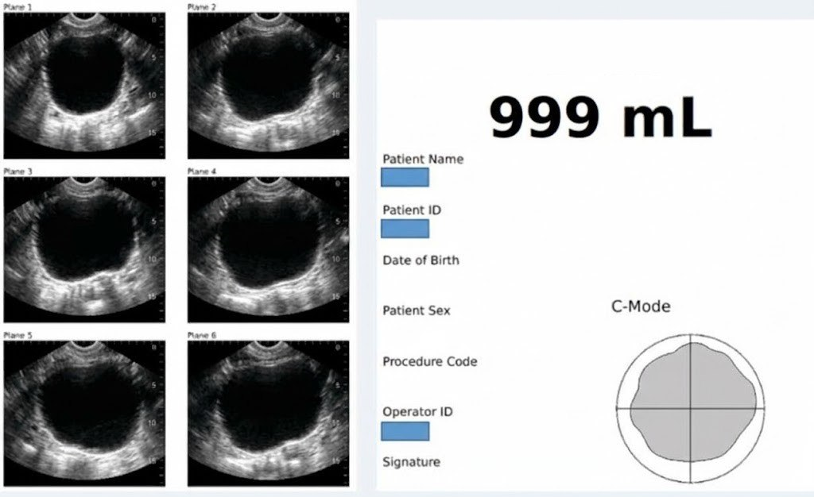
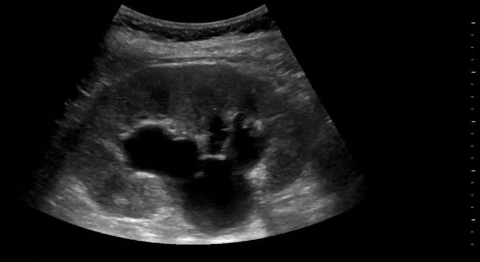
U · Urinalysis
Dip it to look for kidney disease. Do not dip it to diagnose an infection in an older person.
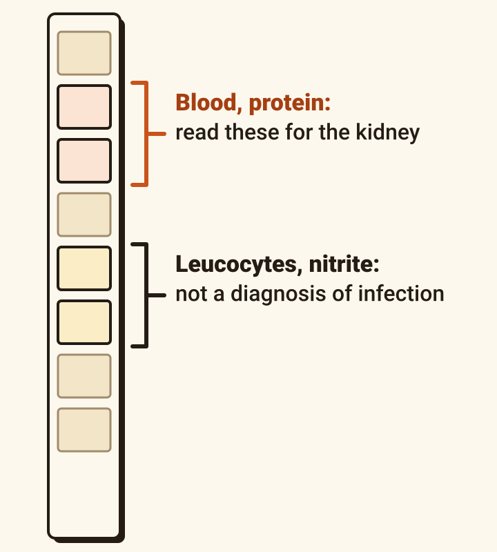
- “Dip the urine”.
- “If proteinuria- send urine PCR”. PCR is the protein-to-creatinine ratio.
- “If suspect infection- send urine MC&S”. That is a culture.
- “If haematuria + proteinuria and no infection- send renal screen” (next card).
- NICE: dip for blood, protein, leucocytes, nitrites and glucose as soon as AKI is suspected. Write it down and act on it.
- Nothing on the stick usually means a cause before the kidney, or a drug.
- Through a catheter, read it with caution: the blood may be from the catheter.
- To diagnose a urinary infection in someone over 65, do not use a dipstick.
- By 80, about half of older adults in care homes have bacteria in the urine without infection. Antibiotics for that do no good and may do harm.
- The same goes for anyone with a catheter.

- So one stick answers one question, about the kidney, and not the other, about infection.
The decision: do you send the antibody tests?
Blood and protein with no other explanation: ring the kidney team. With an explanation: no screen.
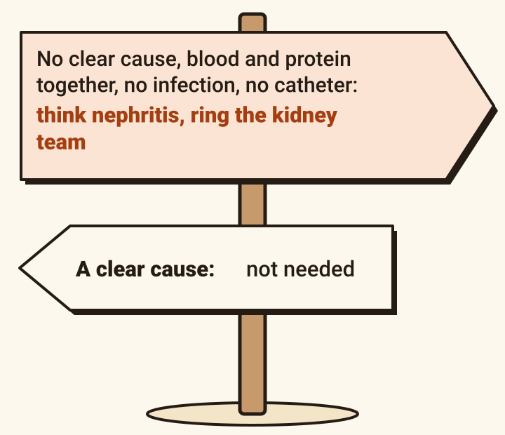
- NICE: think of acute nephritis, and of the kidney team, when there is no obvious cause for the AKI and the dipstick shows blood and protein together, with no urinary infection and no injury from a catheter.
- Other clues: a rash, joint pains, a red painful eye, nosebleeds, coughing blood.
- What the bundle’s screen contains: “ANA, ANCA, anti GBM, complement C3/C4, Immunoglobulins, serum & urine myeloma screen.”
- In plain words: antibody tests for vasculitis and similar diseases, and tests for myeloma.
- NICE: discuss with a kidney specialist within 24 hours when the cause may need specialist treatment, or when no cause is clear.
- These are tests for an AKI with no clear cause, an odd course or other features. They are not a routine AKI set.
N · NEWS
A high score in AKI: think sepsis. A low score does not clear the kidneys.
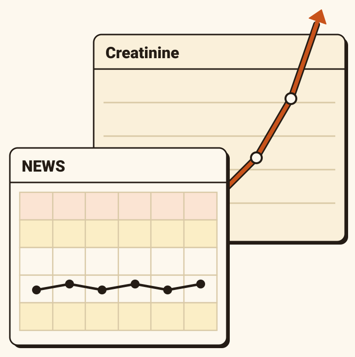
- “NEWS Score high- Consider co-existing sepsis”.
- “Start Sepsis six care bundle if signs of sepsis”.
- The UK Kidney Association recommends prompt identification and treatment of sepsis in AKI.
- People with AKI are also at higher risk of catching an infection. Keep watching the observations.
D · Dry or Wet
Examine him first.
Days of sips. Urea 24.6. Blood pressure 148/82. Do you give a litre of fluid, fast?
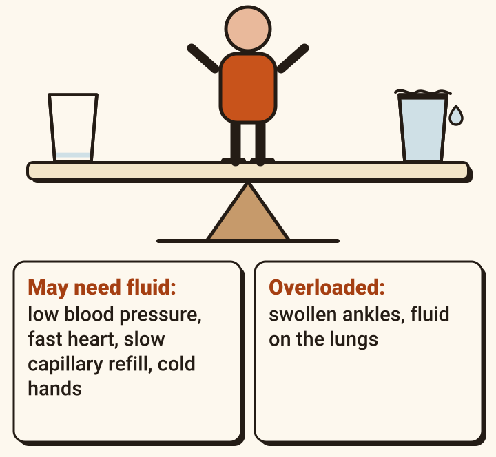
- “Prescribe IV fluid if indicated”.
- “If fluid overload- discuss with senior or renal”.
- “If BP low, hold BP lowering medications”.
- Signs that someone may need fluid urgently (NICE): systolic blood pressure under 100; heart rate over 90; capillary refill over 2 seconds, or cold hands and feet; breathing rate over 20; NEWS 5 or more.
- Look as well for a fall in blood pressure on standing, the neck veins, swollen ankles and fluid on the lungs.
- If resuscitation is needed (NICE): 500 mL of a crystalloid containing 130 to 154 mmol/L of sodium, in under 15 minutes. Then reassess.
- Give fluid with care in AKI: overload does harm.
U · Urinary (I&O)
Measure what goes in and what comes out, and tell the nurses you want it.
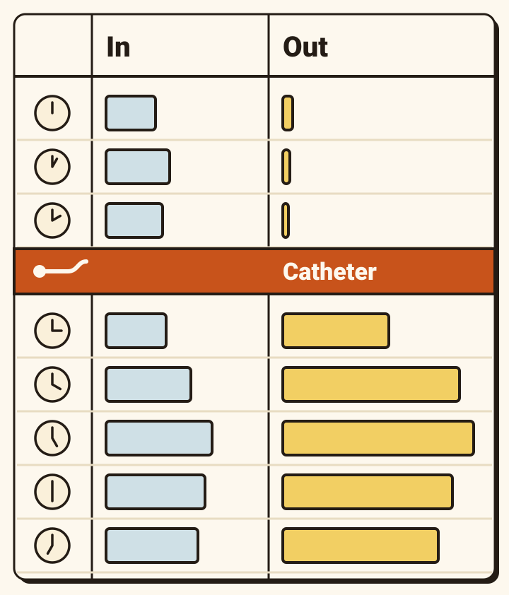
- “Fluid Balance Chart at the bedside- ensure communicated to nursing team”.
- “Daily evaluation of Input and Output”.
- NICE: have a way to notice when someone at risk passes under 0.5 mL per kg an hour.
- After a blocked bladder is drained, the kidneys can pour out urine: 200 mL an hour or more for two hours running, or more than 3 litres in 24 hours.
- In the studies reviewed it happened in 15 to 78% of patients, and lasted 2 to 5 days on average.
- It was more likely with a raised creatinine and a larger volume drained.
- Low sodium (22 to 28%), low blood pressure (9%) and blood in the urine (11 to 55%) were reported. Most settled on their own.
- There is no agreed recipe for replacing the fluid. Chart it every hour and review him.
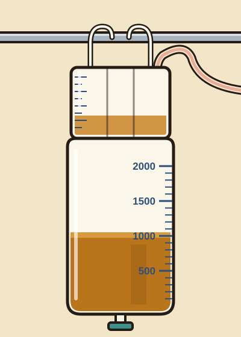
P · Prescriptions
Of each medicine ask: is it affecting the kidney, or is the kidney now letting it build up?
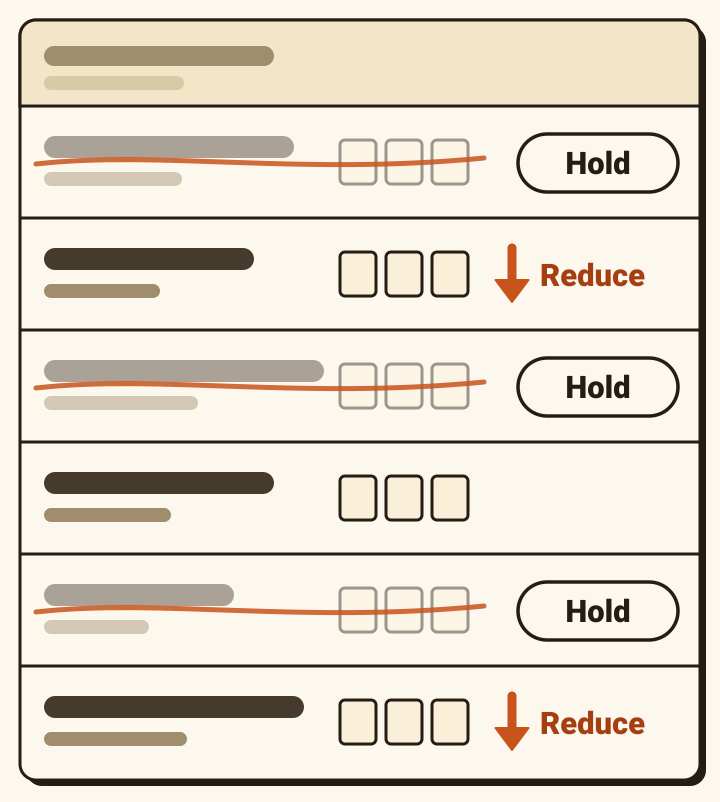
- “Dose adjustments for AKI, consider stopping nephrotoxins”.
- “Consider if medication are clinically appropriate”.
- Hold, for now: NSAIDs; ACE inhibitors and ARBs; diuretics.
- Other blood-pressure tablets: hold or reduce, depending on the blood pressure.
- Avoid if you can: aminoglycoside antibiotics such as gentamicin.
- Avoid or reduce: trimethoprim. It raises potassium, more so with an ACE inhibitor, ARB or spironolactone. It also raises the creatinine without any true change in the kidney.
- Reduce, because they build up: opioids, especially morphine and codeine; gabapentin and pregabalin; digoxin.
- Diabetes tablets: metformin (avoid if the GFR is under 30) and sulfonylureas (they build up and can drop the blood sugar).
- Also think about: spironolactone, eplerenone and amiloride (they raise potassium); direct oral anticoagulants (they may build up and cause bleeding); lithium; aciclovir (reduce the dose); a statin, if there is muscle breakdown.
- Ask a pharmacist. NICE says to.
- Review every medicine and write it down. Check the doses again as the kidney function changes.
5.8 · the number that can stop a heart
Know three bands, get an ECG, and fix the cause.
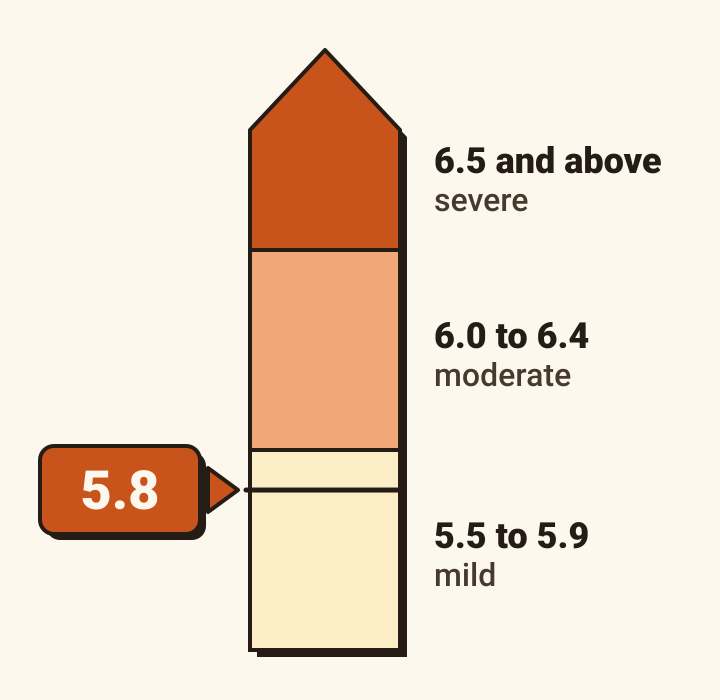
- Three bands: mild, 5.5 to 5.9. Moderate, 6.0 to 6.4. Severe, 6.5 and above.
- Often there are no symptoms. In severe cases, weakness or pins and needles.
- In hospital, at 6.0 or above: an urgent 12-lead ECG.
- Changes on the ECG: calcium into a vein. It protects the heart for 30 to 60 minutes. It does not lower the potassium.
- Insulin with glucose moves potassium into the cells. It is recommended at 6.5 and above, and suggested at 6.0 to 6.4.
- The potassium starts to fall within 15 minutes, and the effect lasts up to 4 to 6 hours. Then it can climb back.
- The bundle: after insulin and dextrose, hyperkalaemia “will recur” unless the cause is treated so that potassium can leave in the urine, “eg: obstruction relieved or urine output re-established”.
The decision: who needs to know?
Some things mean ring now. Stage 3 means ring within a day.
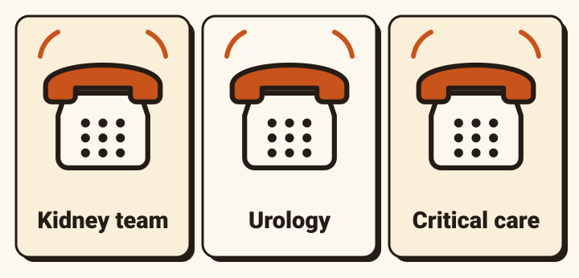
- NICE: refer at once for dialysis (renal replacement therapy) if any of these is not responding to treatment: high potassium; acid in the blood; fluid overload; fluid on the lungs; the effects of urea, such as inflammation round the heart or a clouded brain.
- NICE gives no numbers. The UK Kidney Association gives potassium above 6.5 and pH below 7.15. The Harrogate bundle gives potassium above 6.0 and pH below 7.15.
- Decide on the whole patient, not on one urea, creatinine or potassium result.
- NICE: discuss with a kidney specialist within 24 hours for stage 3 AKI; no clear cause; a cause that may need them (vasculitis, glomerulonephritis, interstitial nephritis, myeloma); a poor response to treatment; complications; a kidney transplant; long-standing kidney disease at stage 4 or 5.
- Not needed when the cause is clear and the kidneys are responding promptly.
- Urology: a blocked kidney on the scan (see O, Obstruction).
- For Harrogate the renal team is at York.
- The bundle’s rule for moving a patient there: potassium below 6.5 with no ECG changes; pH above 7.2; breathing and circulation stable; alert. If not, critical care outreach or intensive care.
- Before any of it, for someone with a lot else wrong: would dialysis offer benefit? Talk to them, their family and the team.
What not to do · each of these is somebody’s reflex
Six reflexes, and the guideline behind each “no”.
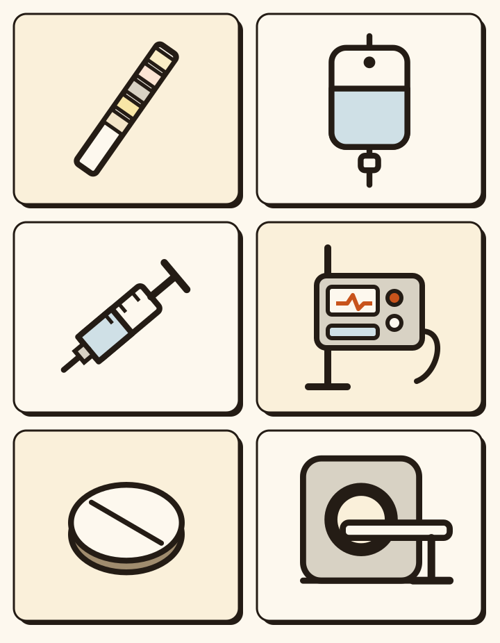
Tap a card to turn it.
Afterwards
AKI that has recovered is still a warning.
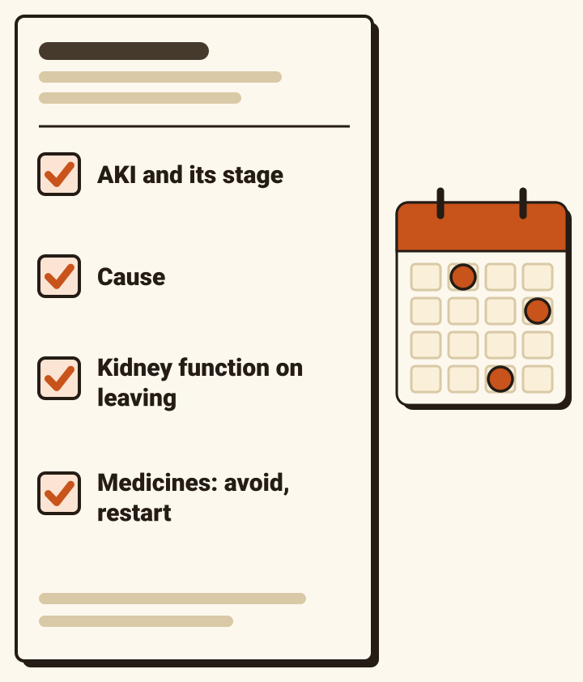
- After AKI, long-term kidney disease and high blood pressure are more likely.
- The discharge letter should say: that he had AKI; the worst stage; the cause; and the kidney function on leaving.
- And: when to recheck the kidney function; which medicines were involved, which to avoid and which may come back; what the patient and family were told.
- Recheck the creatinine after discharge. How soon depends on how well it has recovered.
- Watch for long-term kidney disease for at least three years, even if the numbers are back to normal.
- Restarting a medicine: go back to why it was started. Heart failure medicines restart as soon as it is clinically reasonable.
- Check creatinine and potassium one to two weeks after restarting.
- Tell the patient and family what raises the risk again: an illness with vomiting, diarrhoea or not drinking, and anti-inflammatory painkillers, including those bought over the counter.
- “Sick day rules” (stopping certain tablets when ill) are widely taught. Think Kidneys said in 2020 that the evidence they reduce harm is “very weak”, and that stopping tablets has risks of its own.
Thursday, 15:05, one last time
Two explanations each fitted part of him. One fitted all of it.
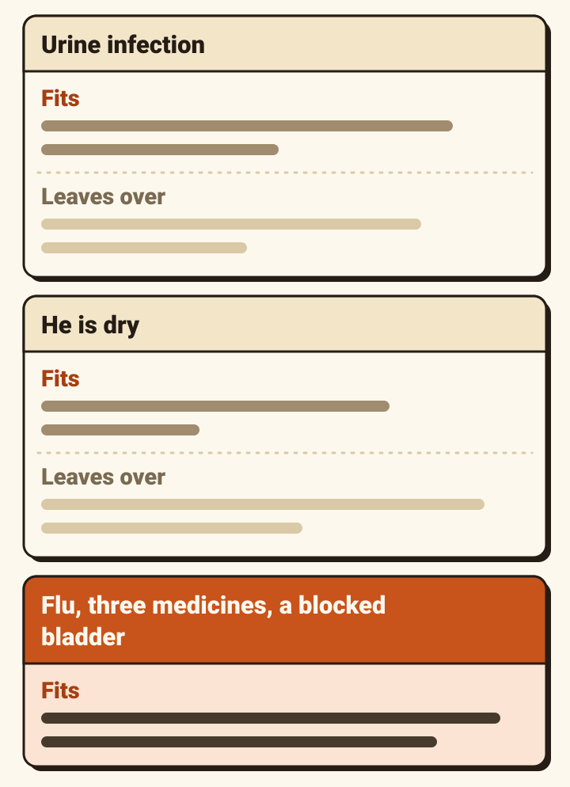
- “Urine infection” fitted the confusion, the temperature and the dipstick. It left over a normal white cell count, influenza A on the swab, and a litre in the bladder.
- “He is dry” fitted the days of sips and the urea. It left over a normal blood pressure, a normal lactate, an examination that found him neither dry nor overloaded, and the scan.
- Influenza put him on his bed. Three medicines he had taken for years made it harder for his bladder to empty. The blocked bladder injured his kidneys.
- Drained, he was calmer within the hour.
Take home
- Read a creatinine beside the last one: 1.5, 2 and 3 times baseline are stages 1, 2 and 3.
- Ask where: before the kidney, in it, or after it. Often more than one.
- ROUND UP: all seven letters. Stanley’s abdomen was soft, and his bladder held a litre.
- The dipstick is for blood and protein. It does not diagnose a urinary infection in an older person.
- Go down the drug chart. Know the potassium. Know who to ring.
Where this comes from.
- Harrogate and District NHS Foundation Trust. Clinical guideline (care bundle) for AKI management in adults: ROUND UP. Version 3, May 2025.
- NICE NG148. Acute kidney injury: prevention, detection and management. 2019, updated October 2024. nice.org.uk/guidance/ng148
- NICE Clinical Knowledge Summary. Acute kidney injury. Revised July 2023. cks.nice.org.uk/topics/acute-kidney-injury
- UK Kidney Association. Clinical practice guideline: acute kidney injury. August 2019. Its review date, August 2024, has passed. ukkidney.org
- UK Kidney Association. Treatment of acute hyperkalaemia in adults. June 2020. Its review date, June 2025, has passed. ukkidney.org
- Think Kidneys (NHS England and the UK Renal Registry). Sick day guidance (2020), restarting medicines after AKI (2018), medicines optimisation (2016), problematic drugs (2017). The programme ended in 2019 and its pages are an archive. thinkkidneys.nhs.uk
- KDIGO. Clinical practice guideline for acute kidney injury. 2012. kdigo.org
- NICE CG174. Intravenous fluid therapy in adults in hospital. 2013, updated 2017. nice.org.uk/guidance/cg174
- UK Health Security Agency and NHS England. Diagnosis of urinary tract infections: quick reference tools. Updated July 2025. gov.uk
- NICE CG97. Lower urinary tract symptoms in men. 2010, updated 2015. nice.org.uk/guidance/cg97
- Rigonalli and colleagues. Post-obstruction hyperdiuresis among patients with urinary retention: a mini review. European Urology Open Science, 2025. doi:10.1016/j.euros.2025.01.017
Guidelines change. Checked October 2026.